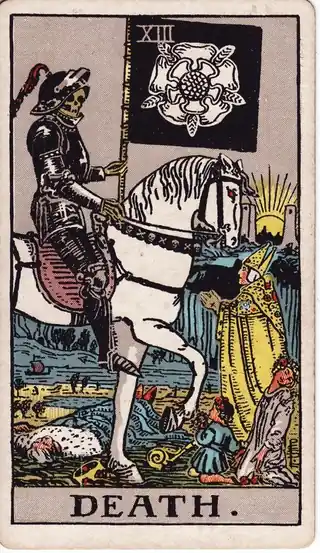

READING
続けるか、やめるかで迷ったときに。執着を手放す判断基準
・ DECIDE. 編集部
今の仕事を続けるべきか、それとも見切りをつけるべきか。何年も続けてきた趣味や副業を、ここで手放すべきか。違和感のある人間関係を、そろそろ清算すべきか。「やめる」という決断だけが、なぜか決められないまま何ヶ月も、何年も先送りになっていませんか。
先に言っておくと、この記事のゴールは、「やめなさい」と背中を押すことではありません。ゴールは、過去への執着と、自分の本心を切り分けることです。続けるにしても、やめるにしても、「ここまで頑張ったから」ではなく「これからの自分が選びたいから」と言える決断にたどり着く。そのための整理をしていきます。
POINT 01 なぜ「やめる」はこんなに難しいのか
始めることには前向きなエネルギーがありますが、やめることには特有の痛みが伴います。その正体の一つが、行動経済学でいう「サンクコスト」、すでに支払って戻らないコストへの執着です。「ここまで時間とお金をかけてきたのに、今やめたら全部無駄になる」。この感覚が、違和感を抱えたままの現状を、正当化し続けます。
でも、冷静に考えてみてください。過去に注いだ時間やお金は、続けてもしなくても、もう戻ってはきません。私たちが選べるのは、「これからの時間とエネルギーを、どこに使うか」だけです。過去のコストは、未来の判断材料にはならない。理屈では分かっていても、感情が追いつかない。だからこそ、別の物差しが必要になります。
その物差しが、「ゼロベースの問い」です。もし今日、何もない状態からスタートするとしても、もう一度これを選びますか？ かけた時間をすべてリセットしたとして、明日から改めてこの仕事を始めたいか。過去のしがらみが一切ないとして、この関係を一から築きたいか。即答できないなら、今しがみついているのは対象の価値ではなく、過去の自分の努力のほうかもしれません。
POINT 02 カードの視点で見る

死神は、その名前に反して「終わりと始まり」を表すカードです。描かれるのは破壊ではなく、ひとつの章の区切りと、その向こうに昇る太陽です。何かを終わらせることは、何か新しいものを始めるための余白を作ることでもある。このカードは、「やめる＝失敗」という思い込みを、そっと外してくれます。

運命の輪は、回り続ける大きな輪の姿です。物事には流れとタイミングがあり、永遠に同じ場所に留まることも、永遠に下降し続けることもない。今の状況が「変えられない現実」に見えるとき、このカードは「それは流れの一場面にすぎない」と教えてくれます。変化そのものを恐れるのではなく、流れのどこにいるのかを見る視点です。

ペンタクルの7は、育ててきた作物を見つめ、立ち止まって見つめ直す人物の姿です。続けるかやめるかの判断は、勢いでも感情でもなく、「ここまでの実りはどうだったか」「この先に実る見込みはあるか」を静かに点検する時間から生まれます。立ち止まることは、逃げることではありません。
POINT 03 決断ログに「迷いの過程」を残す
ゼロベースの問いに一度答えても、迷いは何度も戻ってきます。「やっぱり続けたほうがいいのかもしれない」と、心は揺れ続けます。そこで効いてくるのが、決断ログです。「続けるかやめるかで迷っている」という状態そのものを、理由と一緒に記録に残しておくのです。
記録の仕方はシンプルです。今日はどちらの気持ちが強いか。その理由は何か。体調や出来事など、気持ちに影響した材料は何か。これを数週間分ためて見返すと、自分の迷いのパターンが見えてきます。「疲れている日は、いつもやめたくなる」「評価された日の翌日は、続けたくなる」。気持ちの波に規則性が見えると、「今のこの気持ちは、本心か、一時的な波か」を区別できるようになります。
なお、「やめるかどうか」をいきなり決めきれないときは、期限つきの保留も有効です。「3ヶ月後の月末までに、ゼロベースの問いにもう一度答える」と決めて、その日まで全力で続けてみる。区切りがある保留は、先送りとは違います。迷いの期間そのものにも終わりを決めておくことで、だらだらと執着に引きずられる状態から抜けられます。
そして、記録に残す最大の利点は、次に迷ったときに効くことです。仮に「続ける」と決めたなら、そのときの理由が残っている。数ヶ月後にまた迷いが来ても、「あのとき自分はこう考えて続けた」という物差しがあるから、ゼロから悩み直さずに済みます。逆に「やめる」と決めた後の不安な日にも、決めた理由が自分を静かに支えます。辞めるかどうかを考える全体像は、退職するか迷うときのページにも整理しています。決めたあとの後悔を減らす考え方は、後悔しない選び方もあわせてどうぞ。
POINT 04 自分への問いかけ
最後に、静かな場所で自分に問いかけてみてください。もし今日ゼロから始めるなら、もう一度これを選びますか。続けている理由を一言で言うなら、「やりたいから」ですか、「ここまでやったから」ですか。やめたら失うものと、続けたとき失い続けるもの、どちらが大きいですか。そして、両手が空いたら、次に掴みたいものは何ですか。
過去の選択を悔やむ必要はありません。そこまで真剣に打ち込んだからこそ、今の経験や視点が育ったのです。過去の自分に感謝しながら、静かに手を放すことも、覚悟を決めてもう一度向き合うことも、どちらも立派な決断です。答えは、過去ではなく、これからのあなたの側にあります。